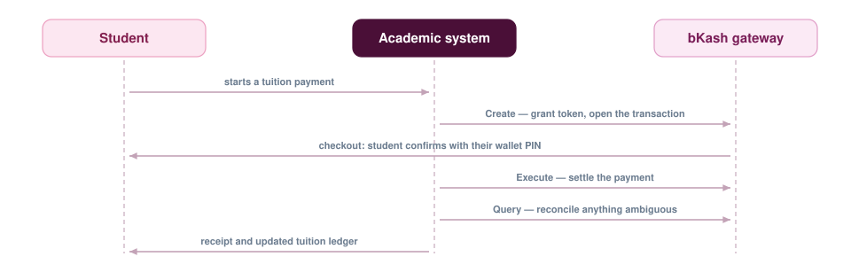

Moving University Tuition Payments Online
University bill payment was still a queue-and-counter process. Integrating bKash — the mobile financial service most students already use — into the existing academic management system moved it onto the phone in their pocket. The full API specification analysis and implementation were mine.

The context
Like everything else, it was high time the traditional university bill payment system moved to an online platform. Working from client requirements, we integrated the bKash payment gateway with our existing comprehensive academic management system, so fee collection happens inside the system that already knows what each student owes.
The API flow
- Create. Initiates the payment flow, fetching tokens and the other confidential information the transaction needs.
- Execute. Completes the payment once the student has confirmed on their wallet.
- Query. Checks the status of a payment — the call that reconciles the cases where the two sides disagree.
The part that takes the work
The happy path is short. What takes the analysis is everything around it: a student closing the tab mid-flow, a wallet timing out after the debit, a duplicate submission. Every one of those has to end with the tuition ledger and the wallet agreeing, which is what the Query call exists for.
Scope of my work
Full API specification analysis and implementation, integration with the existing billing module, and the payment-status reconciliation that keeps institutional records correct.